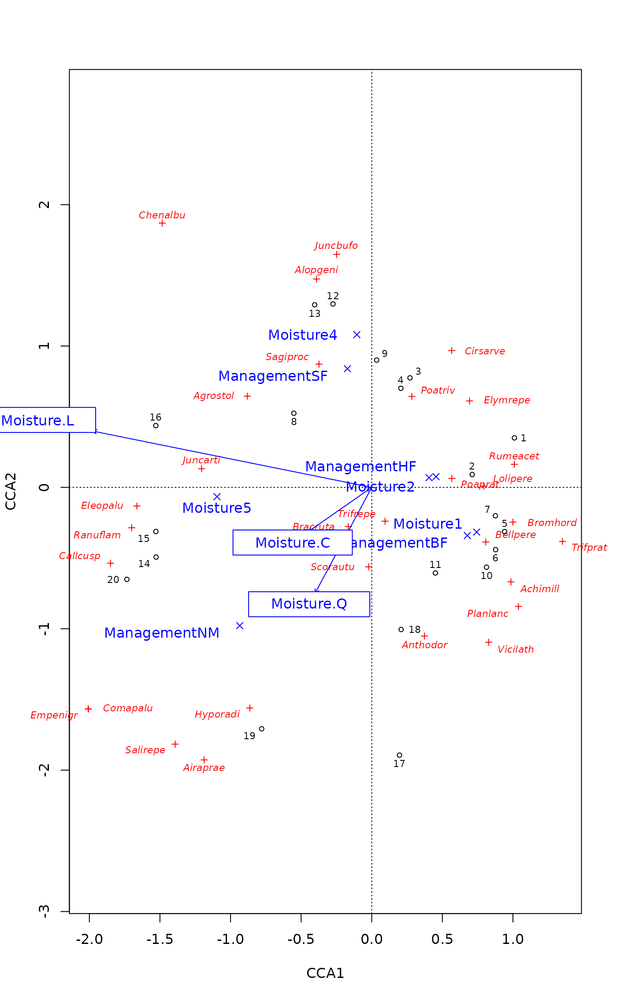
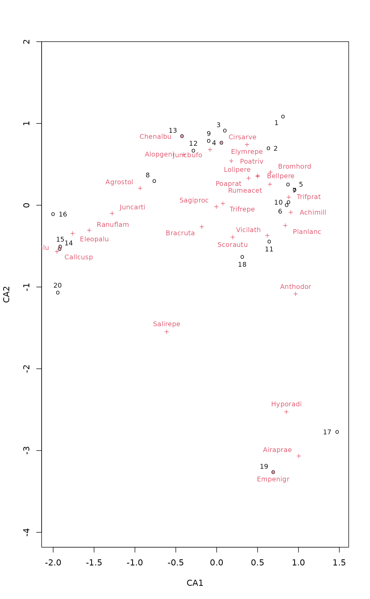
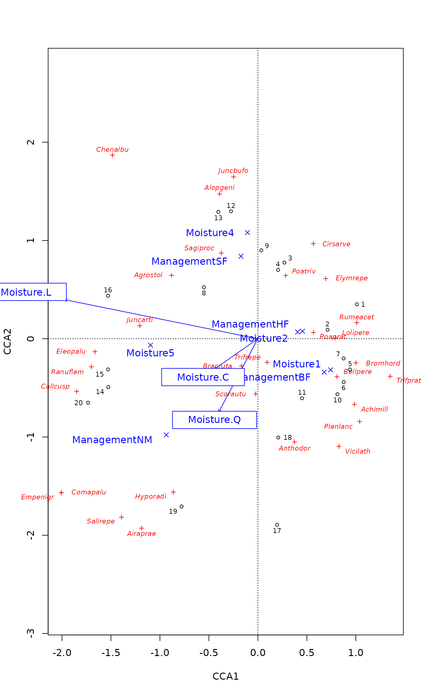
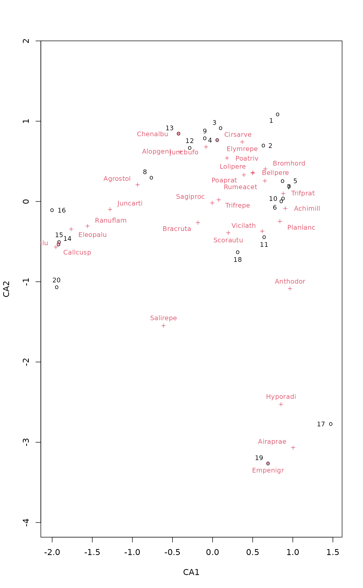

Ordination Plots with Points and Optimized Locations for Text
ordipointlabel.RdThe function ordipointlabel produces ordination plots with
points and text label to the points. The points are in the exact
location given by the ordination, but the function tries to optimize
the location of the text labels to minimize overplotting text. The
function may be useful with moderately crowded ordination plots.
Arguments
- x
For
ordipointlabel()a result object from an ordination function. Forplot.ordipointlabelan object resulting from a call toordipointlabel().- display
Scores displayed in the plot.
- choices
Axes shown.
- col, pch, font, cex
Colours, point types, font style and character expansion for each kind of scores displayed in the plot. These should be vectors of the same length as the number of items in
display.- add
Add to an existing plot.
- select
Items to be displayed. This can either be a logical vector which is
TRUEfor displayed items or a vector of indices of displayed items.selectis only used if a single set of scores is being plotted (i.e.length(display) == 1), otherwise it is ignored and a warning issued. If a logical vector is used, it must have the same length as the scores plotted.- ...
Details
The function uses simulated annealing (optim,
method = "SANN") to optimize the location of the text labels
to the points. There are eight possible locations: up, down, sides
and corners. There is a weak preference to text right above the
point, and a weak avoidance of corner positions. The exact locations
and the goodness of solution varies between runs, and there is no
guarantee of finding the global optimum. The optimization can take a
long time in difficult cases with a high number of potential
overlaps. Several sets of scores can be displayed in one plot.
The function is modelled after pointLabel in the
maptools package.
Value
The function returns invisibly an object of class
ordipointlabel with items xy for coordinates of
points, labels for coordinates of labels, items pch,
cex and font for graphical parameters of each point or
label. In addition, it returns the result of optim as
an attribute "optim". The unit of overlap is the area
of character "m", and with variable cex it is the
smallest alternative.
There is a plot method based on orditkplot but which
does not alter nor reset the graphical parameters via par.
The result object from ordipointlabel inherits from
orditkplot, and can also be replotted with its
plot method. It may be possible to further edit the result
object with orditkplot, but for good results it is
necessary that the points span the whole horizontal axis without empty
margins.
Note
The function is designed for ordination graphics, and the optimization works properly with plots of isometric aspect ratio.
Examples
data(dune)
ord <- cca(dune)
plt <- ordipointlabel(ord)
 ## set scaling - should be no warnings!
ordipointlabel(ord, scaling = "sites")

## plot then add
plot(ord, scaling = "symmetric", type = "n")
ordipointlabel(ord, display = "species", scaling = "symm", add = TRUE)
ordipointlabel(ord, display = "sites", scaling = "symm", add = TRUE)
## redraw plot without rerunning SANN optimisation
plot(plt)

## set scaling - should be no warnings!
ordipointlabel(ord, scaling = "sites")

## plot then add
plot(ord, scaling = "symmetric", type = "n")
ordipointlabel(ord, display = "species", scaling = "symm", add = TRUE)
ordipointlabel(ord, display = "sites", scaling = "symm", add = TRUE)
## redraw plot without rerunning SANN optimisation
plot(plt)
